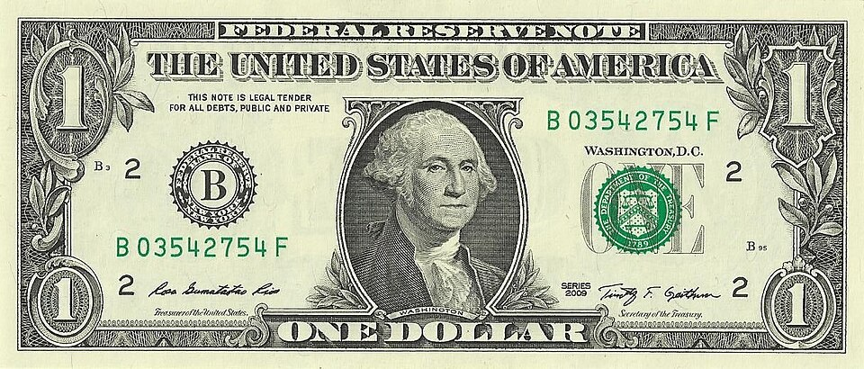
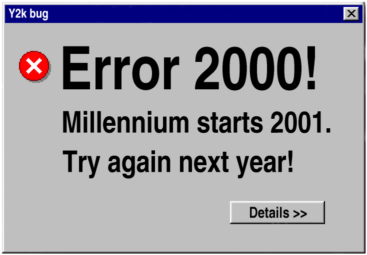
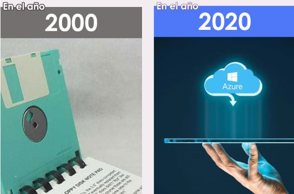

Año 2000: Contexto de Recuperación Nacional
Implementación de la Dolarización en Ecuador (Enero)
Transformación económica fundamental: El 9 de enero de 2000, el gobierno ecuatoriano anunció oficialmente la adopción del dólar estadounidense como moneda oficial. Esta medida extraordinaria, implementada como respuesta a la severa crisis económica de 1999, tuvo profundas implicaciones para todos los sectores, incluida la tecnología educativa.
Para las instituciones de educación superior, la dolarización creó un nuevo entorno económico caracterizado por estabilidad de precios pero también por nuevos desafíos de competitividad. La eliminación de la devaluación facilitó la planificación a mediano plazo para inversiones tecnológicas (equipos importados), pero requirió ajustes significativos en la gestión presupuestaria.
Impacto del Dólar en la UCE:
Para la Universidad Central, la dolarización fue un salvavidas a mediano plazo. Durante 1999, la universidad pagaba el servicio de conectividad a Internet de ECUANEX (que se cobraba en dólares) con un presupuesto en sucres que cada día valía menos. Al dolarizarse la economía, la Dirección Administrativa y Financiera de la UCE pudo, por fin, presupuestar con exactitud el pago de licencias, equipos y ancho de banda anual, permitiendo reactivar proyectos de redes que estaban congelados.
Implicaciones para tecnología educativa:
- Estabilidad en costos: Equipos tecnológicos importados podrían presupuestarse con mayor certeza.
- Transparencia internacional: Costos de servicios y equipos directamente comparables con estándares globales.
- Presión por eficiencia: Necesidad de justificar inversiones tecnológicas en términos de retorno tangible.
- Acceso a mercados: Facilidad para participar en compras internacionales sin barreras cambiarias.

Contexto económico: La dolarización detuvo la hiperinflación tecnológica, permitiendo volver a importar computadoras y servidores a precios estables.
Dolarización: Impacto Macroeconómico
Tipo de cambio fijo
(25,000 sucres previos)
Inflación 2000 vs 1999
(De 52.2% a 12.6%)
Crecimiento PIB
(Tras -7.3% en 1999)
Tasa interés real
(Reducción significativa)
Contexto Internacional: El Año 2000 y el "Bug del Milenio" (Y2K)
Preocupación tecnológica global: La transición al año 2000 estuvo marcada por el problema Y2K. En el contexto ecuatoriano post-crisis, la preparación enfrentó desafíos particulares debido a recursos limitados y equipos antiguos. Instituciones tuvieron que balancear la necesidad de asegurar continuidad operativa con restricciones presupuestarias severas.
Resultado real en Ecuador:
A pesar de las alarmas globales, la transición ocurrió sin incidentes mayores en la academia. Irónicamente, esto se atribuyó a que muchos de los equipos más antiguos y problemáticos habían sido dados de baja obligatoriamente durante la crisis de 1999, y a que la red administrativa universitaria aún no estaba tan automatizada como en países de primer mundo.

Trimestre 1-2: Evaluación y Primeros Proyectos
Evaluación Post-Crisis de Infraestructura Tecnológica
Las instituciones de educación superior llevaron a cabo evaluaciones sistemáticas para cuantificar el deterioro acumulado por la crisis. Los diagnósticos identificaron equipos obsoletos, sistemas críticos vulnerables y necesidades de capacitación, proporcionando la base para los planes de recuperación.
Diagnóstico en la Universidad Central:
A inicios del 2000, los técnicos de la UCE hicieron un levantamiento doloroso: gran parte de las computadoras (pantallas de tubo CRT) de los laboratorios de facultades periféricas estaban dañadas por falta de repuestos. La prioridad absoluta se fijó en reconstruir un "corazón tecnológico" central desde donde se irradiara la conexión al resto del campus, en lugar de intentar arreglar laboratorios aislados.
| Área de Evaluación | Enfoque Común de Recuperación | Recursos Asignados |
|---|---|---|
| Conectividad | Restablecimiento de enlaces mínimos (Proxy) | Renegociación de contratos con ISPs locales |
| Equipos (Hardware) | Reparación y reacondicionamiento | Talleres técnicos internos (Estudiantes de ingeniería) |
| Software | Sistemas esenciales y código abierto | Migración paulatina a plataformas estables (Linux) |
Fuente Histórica: Desarrollo de la educación superior en el Ecuador en los años 2000.
Cooperación Internacional (Mayo 2000)
Organismos internacionales como la Unión Europea (programa ALFA), el BID y agencias bilaterales implementaron programas de apoyo. Estas iniciativas combinaron infraestructura física, capacitación y fortalecimiento institucional, con un fuerte énfasis en la sostenibilidad a largo plazo.

Indicadores de Recuperación (Año 2000)
Conectividad Internet
Equipos operativos
(vs 40-50% en 1999)
Proyectos cooperación
Software libre
(Adopción inicial)
Progreso significativo: La combinación de estabilidad macroeconómica y apoyo externo creó condiciones favorables para iniciar una recuperación acelerada de la infraestructura tecnológica universitaria.
Semestre II 2000: Consolidación y Despedida del Sucre
Expansión de Servicios y Nuevas Capacidades
Estabilizados los servicios básicos, las instituciones comenzaron a expandir capacidades. Se mejoró la infraestructura de red interna (migración a Ethernet switched), se desarrollaron portales web más robustos y se implementaron sistemas de gestión de aprendizaje incipientes.
Tendencias emergentes en la Academia:
- Cableado Estructurado: Adiós al cable coaxial (BNC) y migración definitiva hacia cables UTP (RJ45).
- Identidad Web: Desarrollo de páginas institucionales más allá del simple texto.
- Alfabetización digital: Primeros cursos formales de Ofimática y uso de Internet para estudiantes de todas las carreras, no solo ingenierías.
Finalización Formal de la Dolarización (Septiembre)
El retiro completo del sucre en septiembre de 2000 institucionalizó el nuevo entorno económico. Esto permitió planificar costos recurrentes en dólares (licencias, conectividad) con estabilidad, pero forzó a las instituciones a ser más eficientes y transparentes en su gestión tecnológica para competir bajo estándares internacionales de costos.
Balance Histórico: El Puente al Siglo XXI
Logros, Avances y Perspectiva Futura
El año 2000 marcó el cambio definitivo de la mentalidad de "supervivencia" (propia de 1999) hacia la "recuperación" e "institucionalización". Se logró estabilizar servicios básicos, rehabilitar infraestructura crítica y establecer alianzas clave.
La UCE lista para el nuevo milenio:
Al finalizar el año 2000, la Universidad Central del Ecuador había superado su época más oscura. Las bases sentadas este año (gobernanza más estructurada para los centros de cómputo, presupuestos estables en dólares, y el empuje de una generación de estudiantes nativos digitales) fueron los cimientos para el desarrollo de la red académica troncal de fibra óptica y la posterior creación de sistemas en línea, como el Sistema Integral de Información Universitaria (SIIU), que caracterizarían su historia en la siguiente década.

Conclusión del Proyecto: 1980 - 2000
Las dos décadas cubiertas por esta investigación histórica muestran una trayectoria de desarrollo tecnológico marcada por el pionerismo temprano (IBM/Apple), la expansión gradual, la aceleración con la llegada de ECUANEX y la Web, la prueba severa durante el Feriado Bancario, y la resurrección gracias a la dolarización y el Software Libre.
Esta trayectoria proporciona el contexto absoluto y esencial para comprender cómo la Universidad Central del Ecuador y la academia nacional forjaron la infraestructura digital que hoy damos por sentada.